Le service Environnement rassemble tout ce que l'usine doit prouver à la DREAL, au client et à l'auditeur ISO 14001 : le registre des déchets et ses bordereaux, l'autosurveillance des rejets, le zonage ATEX, l'analyse des aspects & impacts, le classement ICPE / Seveso, le bilan carbone et la veille réglementaire. Ce manuel décrit les 8 onglets, écran par écran.
👤 Pour qui : Responsable QSE / Environnement (écriture : Qualité, OAS, Direction · lecture : BE, Production, Maintenance, RH)🧭 Dans l'ERP : Sidebar → Environnement🗂 10 onglets
Le geste commun à tous les onglets. Les onglets de saisie fonctionnent tous de la même façon : un bandeau vert de rappel réglementaire, un compteur d'éléments, un champ Rechercher… qui filtre le tableau à la frappe, un bouton vert de création à droite, puis un tableau dont chaque ligne se termine par deux icônes — le crayon (modifier) et la corbeille (supprimer, avec confirmation). Toutes les fenêtres de saisie se terminent par la même case jaune « Soumettre à la validation de la Direction » : cochée, la fiche part dans Direction › À valider et un badge de décision s'affichera ensuite sur la ligne.
1
Déchets
À quoi ça sert. C'est le registre des déchets, à conserver 5 ans et présentable à tout contrôle. Chaque sortie de déchet y est tracée : quoi, combien, par quelle filière, avec quel transporteur, vers quel exutoire. Pour les déchets dangereux (bains usés, boues d'hydroxydes, rinçages du traitement de surface, huiles et émulsions d'usinage), c'est aussi ici que vit le bordereau BSDD / Trackdéchets. Le registre alimente la déclaration annuelle GEREP.
Ce que vous voyez
Sous le bandeau de rappel réglementaire, la barre « Registre des déchets » avec le nombre d'éléments, le champ de recherche, un bouton clair « Déchets des produits périmés » et le bouton vert « Nouveau déchet ». Le tableau liste : Date, Code déchet, Désignation, DD, Qté, Filière, BSD, Actions.
Un astérisque rouge derrière le code déchet signale un code européen dangereux ; la colonne DD affiche alors oui, sinon non.
La colonne BSD montre où en est le bordereau : Brouillon · Émis · Pris en charge (transporteur) · Reçu (exutoire) · Traité · Refusé. Deux valeurs anciennes subsistent pour l'historique : « Enlevé » et « En attente ».
La quantité est affichée avec son unité ; la filière reprend un code R (valorisation) ou D (élimination).
En bas du tableau, le volet dépliant « Nomenclature déchets EU (2014/955/UE) & codes de filière R/D » rappelle les codes utilisables : vert = non dangereux, rouge = dangereux, et la liste R1 à R13 / D5 à D15.
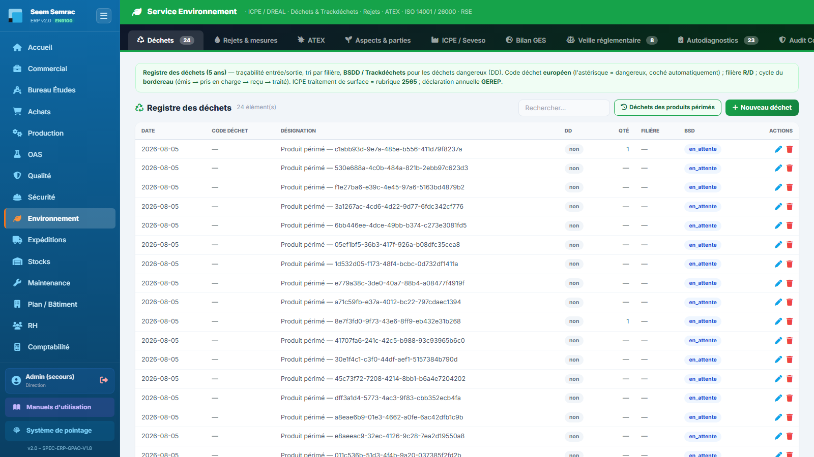
Déchets — c'est l'onglet qui s'ouvre par défaut ; repérez la colonne DD et la colonne BSD, ce sont les deux que l'inspecteur regarde en premier.
Pas à pas — enregistrer un enlèvement de déchet dangereux
Cliquez sur « Nouveau déchet » : la fenêtre de saisie s'ouvre, la date du jour déjà remplie.
Saisissez le code déchet EU : le champ propose la liste (commencez à taper « 11 01 » pour les acides et boues de traitement de surface, « 12 01 » pour les limailles et huiles d'usinage). Si le code porte un astérisque, la case « Dangereux » est cochée toute seule à l'enregistrement — vous n'avez rien à faire.
Renseignez la désignation (seul champ obligatoire), la quantité et son unité, puis la zone productrice (atelier, ligne OAS, magasin…).
Choisissez la filière dans la liste R/D — par exemple « R4 — Recyclage des métaux » pour les copeaux, « D9 — Traitement physico-chimique » pour un bain usé.
Complétez le transporteur et l'exutoire (l'installation qui traite le déchet).
Reportez le N° BSDD et l'ID Trackdéchets, puis positionnez le cycle du bordereau sur « Émis ».
Choisissez le site (Seem ou Semrac), cochez éventuellement la validation Direction, puis « Enregistrer ».
Plus tard, rouvrez la ligne au crayon pour faire avancer le cycle : « Pris en charge » à l'enlèvement, « Reçu » à l'accusé de réception, « Traité » quand l'exutoire retourne le bordereau final. Le bordereau n'est soldé que dans cet état.
Pas à pas — verser les produits périmés au registre
Cliquez sur « Déchets des produits périmés » : une demande de confirmation s'affiche (« Déclarer en déchets tous les produits périssables périmés ? »).
Confirmez : l'ERP parcourt les produits périssables suivis dans Qualité › Produits Périssables et retient ceux dont la date d'expiration est dépassée.
Un message indique combien de déchets ont été créés sur combien de produits périmés trouvés. Chaque ligne créée porte la désignation « Produit périmé — … », la quantité et la zone de stockage d'origine, et le statut en attente.
Complétez ensuite chaque ligne au crayon : code déchet, filière, transporteur, exutoire, n° de bordereau.
Astuce : l'opération est rejouable sans risque — un produit périmé déjà déclaré n'est pas recréé en double. Lancez-la en fin de mois, c'est le moyen le plus simple de ne pas oublier une résine ou une colle périmée au magasin.
Le formulaire, champ par champ
Champ
Saisie
Obligatoire
Explication
Date
Date
Non (jour du jour par défaut)
Date de production ou d'enlèvement du déchet.
Code déchet EU
Liste assistée
Non
Nomenclature 2014/955/UE. L'astérisque désigne un déchet dangereux.
Désignation
Texte
Oui
Libellé en clair (« Bain de dégraissage usé », « Copeaux aluminium »).
Dangereux
Case à cocher
Non
Cochée automatiquement si le code porte un astérisque ; à cocher à la main sinon.
Quantité · Unité
Nombre · Texte
Non
Poids ou volume enlevé, dans l'unité du bordereau (kg, t, L).
Zone productrice
Texte
Non
Où le déchet a été produit — utile pour les actions de réduction à la source.
Filière (code R/D)
Liste assistée
Non
R = valorisation, D = élimination. Le taux de valorisation du tableau de bord se calcule sur les filières R.
Transporteur · Exutoire
Texte
Non
Les deux maillons obligatoires de la chaîne de traçabilité.
N° BSDD · ID Trackdéchets
Texte
Non
Références du bordereau papier et de la plateforme nationale.
Fenêtre « Nouveau déchet » — le code déchet EU commande tout : s'il porte un astérisque, la case Dangereux se coche d'elle-même à l'enregistrement. Contrôlez ensuite le trio Filière R/D · Transporteur · Exutoire, qui constitue la chaîne de traçabilité, et le cycle du bordereau (BSD) avant d'enregistrer.
Règles & points d'attention
Le registre doit être tenu à jour en continu et conservé 5 ans : saisissez à l'enlèvement, pas en fin d'année.
L'atelier de traitement de surface relève de la rubrique ICPE 2565 ; ses bains, boues d'hydroxydes et eaux de rinçage sont des déchets dangereux et exigent tous un bordereau.
Ne saisissez jamais « dangereux = non » sur un code à astérisque : l'ERP le recorrigera à l'enregistrement, mais la cohérence de votre déclaration GEREP en dépend.
Attention : la corbeille supprime définitivement la ligne du registre. Un déchet enlevé ne se supprime pas — il se corrige. N'utilisez la corbeille que pour effacer une saisie erronée du jour même.
2
Rejets & mesures
À quoi ça sert. C'est le carnet d'autosurveillance du site : rejets aqueux (pH, DCO, métaux issus des bains de rinçage), émissions dans l'air, bruit en limite de propriété, et consommations d'eau et d'énergie. Chaque mesure est confrontée à la valeur limite d'émission (VLE) fixée par l'arrêté préfectoral. C'est la preuve que l'on demandera lors d'une inspection DREAL.
Ce que vous voyez
La barre « Mesures (eau / air / bruit / énergie) » avec sa recherche et le bouton vert « Nouvelle mesure ». Le tableau affiche : Date, Type, Point, Paramètre, Valeur, VLE, Conforme, Actions.
La colonne Conforme est calculée toute seule dès qu'une VLE est renseignée : oui si la valeur est inférieure ou égale à la VLE, non sinon, avec la mention discrète « auto ». Si aucune VLE n'est saisie, c'est la case cochée à la main dans le formulaire qui s'affiche.
Sous le tableau, une ligne « Relevés d'eau OAS récents » reprend les 8 derniers relevés de consommation saisis dans le module OAS — vous n'avez pas à les ressaisir ici.
Le volet dépliant « VLE de référence » donne les repères de l'arrêté type du 02/02/1998 : pH entre 5,5 et 8,5 · température ≤ 30 °C · MES ≤ 35 mg/L · DCO ≤ 125 mg/L · DBO5 ≤ 30 mg/L · hydrocarbures totaux ≤ 10 mg/L · aluminium ≤ 5 mg/L · chrome total ≤ 0,5 mg/L · chrome VI ≤ 0,1 mg/L · nickel ≤ 0,5 mg/L · fluorures ≤ 15 mg/L · zinc ≤ 2 mg/L.
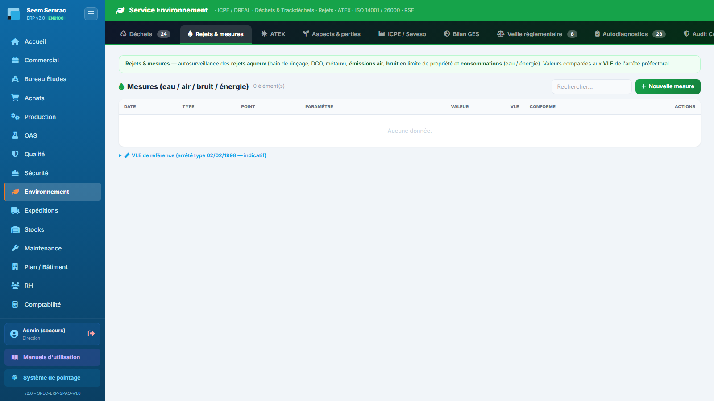
Rejets & mesures — la colonne Conforme se remplit seule ; la ligne « Relevés d'eau OAS » sous le tableau montre le pont automatique avec l'atelier d'anodisation.
Pas à pas — enregistrer une analyse de rejet aqueux
Cliquez sur « Nouvelle mesure ».
Choisissez le type : Rejet eau (les autres choix sont Consommation eau, Émission air, Bruit, Énergie).
Indiquez la date du prélèvement et le point de mesure (regard de sortie, cheminée, limite de propriété…).
Saisissez le paramètre — le champ propose la liste des paramètres de référence (DCO, Chrome VI, Nickel, pH…) — puis la valeur mesurée et son unité.
Reportez la valeur limite (VLE) de votre arrêté préfectoral. Dès qu'elle est présente, la conformité s'affiche automatiquement dans le tableau.
Renseignez l'organisme qui a réalisé l'analyse, ajoutez vos observations, choisissez le site, puis « Enregistrer ».
Vérifiez la ligne : si la conformité affiche non, la mesure est comptée dans la tuile « Rejets hors VLE » du tableau de bord — traitez-la immédiatement.
Pas à pas — suivre une consommation mensuelle
Créez une mesure de type Consommation eau ou Énergie, à la date de relevé du compteur.
Laissez la VLE vide : une consommation n'a pas de valeur limite. Cochez « Conforme » si vous voulez la marquer comme normale.
Les consommations d'eau du mois en cours alimentent la tuile « Conso. eau (mois) » du tableau de bord et l'indicateur RSE annuel de consommation d'eau.
Seuil de l'arrêté préfectoral. Sa présence déclenche le calcul automatique de conformité.
Conforme (si pas de VLE)
Case à cocher
Non
Appréciation manuelle, utilisée uniquement quand aucune VLE n'est saisie.
Organisme
Texte
Non
Laboratoire ou bureau de contrôle — la traçabilité de la preuve.
Observations
Texte libre
Non
Conditions de prélèvement, incident constaté, suite donnée.
Site
Seem / Semrac
Non
Entité concernée.
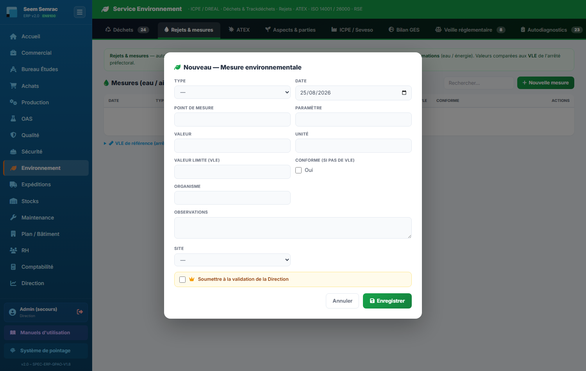
Fenêtre « Nouvelle mesure » — le Type en tête (Consommation eau · Rejet eau · Émission air · Bruit · Énergie) décide de la famille de suivi et des tuiles alimentées. Le couple Valeur / Unité se lit toujours avec la VLE juste en dessous : dès qu'une VLE est saisie, la conformité de la ligne se calcule seule et la case « Conforme » ne sert plus.
Règles & points d'attention
Les VLE du volet dépliant sont des repères de saisie, pas votre réglementation : la seule valeur opposable est celle de l'arrêté préfectoral de votre site. Saisissez celle-ci dans le champ VLE.
Le contrôle automatique compare valeur ≤ VLE. Pour un paramètre à plage comme le pH (5,5 à 8,5), seule la borne haute est vérifiée : un pH trop bas ne sera pas signalé automatiquement — jugez-le vous-même et cochez la conformité en conséquence.
Une mesure non conforme ne crée pas de non-conformité qualité automatiquement : ouvrez la NC correspondante dans Qualité › Non-Conformités et l'action associée dans l'onglet Aspects & impacts.
Bon à savoir : les relevés d'eau saisis par l'atelier OAS (onglet « Relevé consommation eau ») remontent ici en lecture. Ils illustrent la consommation réelle de la ligne d'anodisation sans double saisie.
3
ATEX
À quoi ça sert. Une atmosphère explosive peut se former partout où l'on manipule des solvants, des vapeurs inflammables ou des poussières métalliques. La réglementation impose de classer les zones, d'y installer du matériel adapté et de formaliser le tout dans un DRPCE (Document Relatif à la Protection Contre les Explosions). Cet onglet tient l'inventaire des zones et génère le DRPCE de chacune en PDF.
Ce que vous voyez
La barre « Zones ATEX » avec sa recherche et le bouton vert « Nouvelle zone », puis le rappel réglementaire. Le tableau affiche : Zone, Type, Localisation, Origine, Matériel requis, Revue, Site, DRPCE, Actions.
La colonne Type porte un badge Zone 0 à Zone 22 : 0 / 1 / 2 pour les gaz et vapeurs (permanent, occasionnel, rare ou bref), 20 / 21 / 22 pour les poussières.
La colonne Revue est un feu tricolore : date en rouge si la revue est dépassée, en orange si elle tombe dans les 30 jours, en texte simple au-delà.
La colonne DRPCE propose sur chaque ligne un bouton violet PDF : il ouvre dans un nouvel onglet le document relatif à la protection contre les explosions de cette zone, prêt à imprimer.
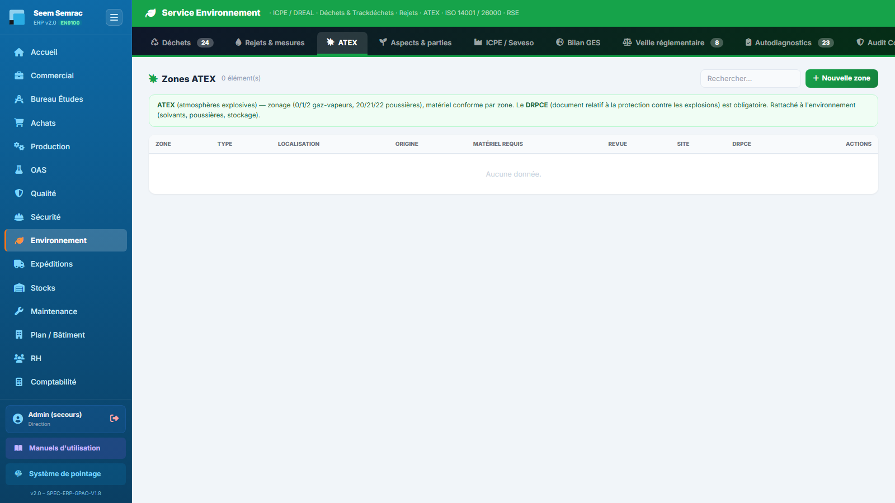
ATEX — les badges de classement à gauche, le feu tricolore de la revue au centre, et le bouton PDF du DRPCE à droite de chaque ligne.
Pas à pas — déclarer une zone ATEX et sortir son DRPCE
Cliquez sur « Nouvelle zone ».
Donnez un nom de zone (champ obligatoire) parlant pour l'atelier : « Cabine de dégraissage solvant », « Local de charge batteries ».
Choisissez le classement dans la liste des six zones, puis l'origine du risque : Gaz / vapeur ou Poussière.
Décrivez la localisation et l'étendue de la zone (le rayon réellement classé, pas seulement le local).
Listez les substances inflammables avec, si vous les connaissez, leurs limites d'explosivité (LIE / LSE), puis les sources d'inflammation identifiées (points chauds, électricité statique, outillage…).
Indiquez le matériel conforme requis — catégorie et marquage attendus pour tout équipement installé dans la zone.
Renseignez les deux blocs de mesures : les mesures techniques de prévention (éviter que l'atmosphère explosive se forme : ventilation, confinement, inertage) et les mesures de protection et organisationnelles (limiter les effets, formation du personnel, permis de feu, consignes, coordination avec les entreprises extérieures).
Saisissez l'évaluateur et la date d'évaluation / revue, choisissez le site, puis « Enregistrer ».
Sur la ligne créée, cliquez sur le bouton PDF de la colonne DRPCE : le document se génère à partir de ce que vous venez de saisir. Faites-le signer et classez-le avec le dossier ICPE.
Le formulaire, champ par champ
Champ
Saisie
Obligatoire
Explication
Nom de la zone
Texte
Oui
Identifiant terrain de la zone.
Classement (zone ATEX)
0 · 1 · 2 · 20 · 21 · 22
Non
Fréquence de présence de l'atmosphère explosive ; conditionne la catégorie de matériel admise.
Localisation / étendue
Texte
Non
Emplacement et dimensions du volume classé.
Origine du risque
Gaz / vapeur · Poussière
Non
Détermine la série de zones (0-1-2 ou 20-21-22).
Substances inflammables
Texte
Non
Produits en cause, avec LIE/LSE si connues.
Sources d'inflammation identifiées
Texte
Non
Inventaire des sources possibles — exigence du DRPCE.
Matériel conforme requis
Texte
Non
Catégorie et marquage imposés aux équipements de la zone.
Mesures techniques de PRÉVENTION
Texte libre
Non
Ce qui empêche l'atmosphère explosive de se former.
Mesures de PROTECTION + organisationnelles
Texte libre
Non
Ce qui limite les effets d'une explosion + formation, permis feu, consignes, coordination.
Évaluateur (DRPCE)
Texte
Non
Auteur de l'évaluation — figure sur le document.
Date d'évaluation / revue
Date
Non
Pilote le feu tricolore de la colonne Revue.
Site
Seem / Semrac
Non
Entité concernée.
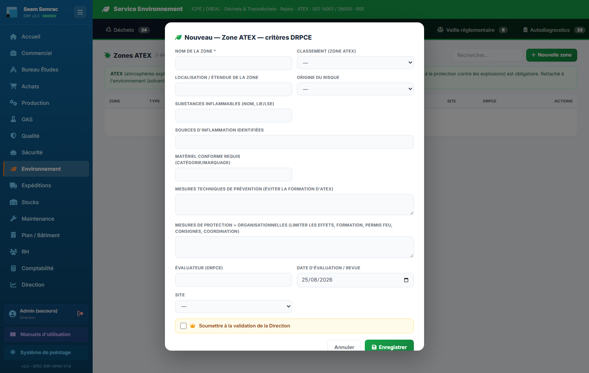
Fenêtre « Nouvelle zone » — seul le nom de la zone est obligatoire, mais c'est l'ensemble de la fiche qui remplit le DRPCE : classement, origine du risque, substances inflammables, sources d'inflammation, matériel requis, puis les deux blocs distincts mesures de prévention et mesures de protection & organisationnelles. La date d'évaluation / revue saisie en bas commande le feu tricolore de la colonne Revue.
Règles & points d'attention
Le DRPCE est obligatoire dès qu'une zone existe. Le PDF de l'ERP ne vaut que ce que vous avez saisi : une zone sans mesures de prévention ni sources d'inflammation produit un document vide de sens.
Le tableau de bord compte les revues dues (date dépassée). Passez cette tuile à zéro avant tout audit ou visite d'inspection.
Les zones ATEX se reportent aussi sur le plan de l'usine, dans le service Plan / Bâtiment, avec les repères de type atex — pratique pour la formation et l'accueil des entreprises extérieures.
4
Aspects & parties intéressées (ISO 14001)
À quoi ça sert. C'est l'analyse environnementale exigée par l'ISO 14001 §6.1.2, le cœur du système de management environnemental. Pour chaque activité de l'entreprise on identifie ce qu'elle produit sur l'environnement (l'aspect : un rejet, un déchet, une consommation, du bruit), l'impact qui en résulte, et on le cote. Les aspects les plus critiques deviennent des aspects environnementaux significatifs (AES) : ce sont eux qui alimentent le programme environnemental et le plan d'audit.
Ce que vous voyez
Le bandeau explique la méthode de cotation. La barre « Aspects & impacts environnementaux » affiche, en plus de la recherche, un compteur orange « N AES significatif(s) » et le bouton vert « Nouvel aspect ». Le tableau affiche : Activité / processus, Aspect environnemental, Milieu, Condition, Criticité, Significatif, Statut, Actions.
Milieu : badge bleu — eau, air, sol, déchet, énergie, bruit ou ressource.
Condition : normale · anormale (démarrage / arrêt) · urgence (accident). Un aspect doit être coté dans chacune des conditions qui le concernent.
Criticité : pastille colorée — vert jusqu'à 4, jaune jusqu'à 8, orange jusqu'à 11, rouge au-delà.
Significatif : badge orange AES quand l'aspect est retenu comme significatif, sinon non.
Statut du traitement : à traiter · en cours · maîtrisé.
Le volet dépliant « Perspective cycle de vie » rappelle les 8 étapes, de l'acquisition des matières premières à l'élimination finale, en précisant pour chacune si l'entreprise a une maîtrise ou seulement une influence.
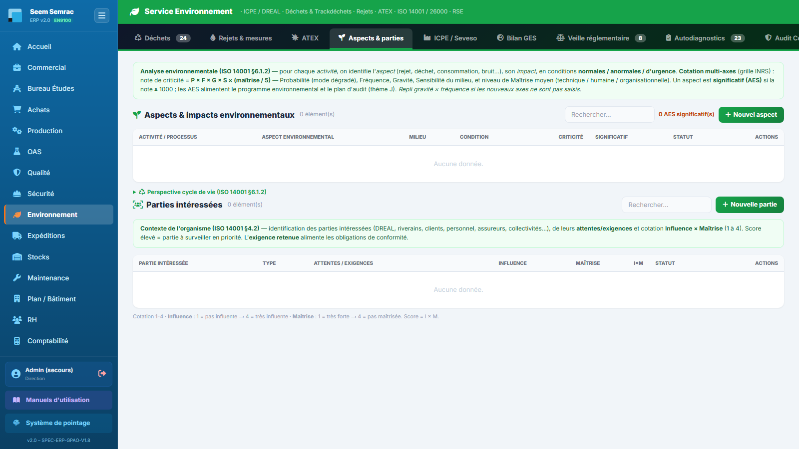
Aspects & impacts — le compteur d'AES en haut à droite est l'indicateur de pilotage du SME ; la colonne Criticité classe visuellement les priorités.
Comment se calcule la criticité
L'ERP applique une cotation multi-axes d'inspiration INRS. Chaque axe se cote sur l'échelle 1 / 3 / 5 / 7.
Si vous renseignez les quatre axes Probabilité (P), Fréquence (F), Gravité (G) et Sensibilité du milieu (S), la note vaut P × F × G × S × (maîtrise moyenne ÷ 5), la maîtrise moyenne étant la moyenne des axes technique, humain et organisationnel réellement saisis. L'aspect est déclaré significatif au-delà de 1000.
Si vous ne saisissez que Gravité et Fréquence, l'ERP retombe sur la cotation simple G × F, avec un seuil de significativité à 9.
Dans les deux cas, le calcul n'est fait que si vous laissez la case « AES significatif » décochée : cocher la case impose votre décision et l'ERP ne la contredit pas.
À lire dans le tableau : la colonne Criticité de la liste affiche le produit Gravité × Fréquence, c'est-à-dire un repère de lecture rapide. La note multi-axes complète, elle, sert au calcul du caractère significatif. Ne vous étonnez donc pas qu'une ligne cotée « 15 » soit marquée AES : c'est la note complète qui a tranché.
Choisissez l'aspect environnemental (obligatoire, liste assistée : Rejet aqueux, Émission atmosphérique, Déchet dangereux, Déchet non dangereux, Consommation d'eau, Consommation d'énergie, Bruit, Odeur, Consommation de matières, Risque de déversement / pollution du sol) et décrivez l'impact attendu sur l'environnement.
Sélectionnez le milieu, l'étape du cycle de vie et la condition (normale, anormale ou urgence).
Cotez les axes sur l'échelle 1 / 3 / 5 / 7 : Gravité, Fréquence, puis — pour la cotation complète — Probabilité (en mode dégradé) et Sensibilité du milieu.
Cotez les trois axes de maîtrise : technique, humaine, organisationnelle. Plus la maîtrise est faible, plus la note monte.
Laissez « AES significatif » décoché pour que l'ERP tranche, ou cochez-le si vous voulez imposer le caractère significatif.
Complétez l'exigence légale associée, les moyens de maîtrise existants, puis l'action / objectif du programme environnemental avec son responsable et son échéance.
Positionnez le statut (À traiter / En cours / Maîtrisé), choisissez le site et « Enregistrer ».
Vérifiez la ligne : si le badge AES apparaît, l'aspect entre dans le compteur du haut, dans la tuile « Aspects significatifs » du tableau de bord, et devient une entrée du plan d'audit environnemental.
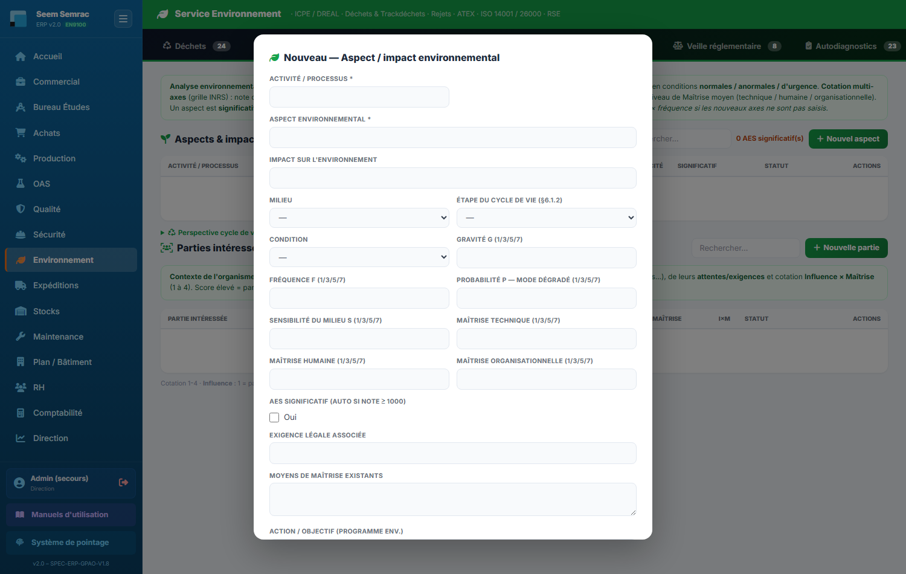
Fenêtre « Nouvel aspect » — activité / processus et aspect environnemental sont les deux champs obligatoires ; milieu, étape du cycle de vie et condition (normale / anormale / urgence) situent la cotation. Tous les axes se cotent sur la même échelle 1 / 3 / 5 / 7 — gravité, fréquence, probabilité, sensibilité du milieu, puis les trois maîtrises. Laissez la case « AES significatif » décochée pour que l'ERP calcule lui-même la criticité à l'enregistrement.
Règles & points d'attention
Un même aspect doit être coté séparément en condition normale, anormale et d'urgence : un bain de rinçage n'a pas la même gravité en marche courante et en cas de rupture de cuve.
Les AES sont l'entrée du programme d'audit interne ISO 14001 (thème J) piloté dans Qualité › Audit Conformité — et repris dans le sous-onglet « Programme » de l'onglet Audit Conformité.
Renseignez l'exigence légale associée : c'est ce qui fait le lien entre votre analyse et les obligations suivies dans l'onglet Veille réglementaire.
Astuce : commencez par les activités à fort enjeu — Traitement de surface, Stockage produits chimiques, Dégraissage. Une analyse de dix lignes bien cotées vaut mieux qu'un tableau de cent lignes à criticité vide.
Les parties intéressées
Sous le tableau des aspects, le même onglet porte l'analyse du contexte de l'organisme (ISO 14001 §4.2) : qui a des attentes vis-à-vis de nous en matière d'environnement, et à quel point ces attentes sont maîtrisées. Les deux vont ensemble — les parties intéressées expriment des exigences, les aspects & impacts disent ce que notre activité provoque. Barre « Parties intéressées » et bouton « Nouvelle partie ». Colonnes : Partie intéressée, Type, Attentes / exigences, Influence, Maîtrise, I×M, Statut.
La cotation va de 1 à 4. Influence : 1 = pas influente → 4 = très influente. Maîtrise : 1 = très forte → 4 = pas maîtrisée. Le score I×M est calculé automatiquement à l'enregistrement.
Plus le score est élevé, plus la partie est à surveiller en priorité : la pastille passe du vert au rouge en montant.
Statuts : à suivre · maîtrisé · critique.
Cliquez sur « Nouvelle partie » et choisissez-la dans la liste assistée (DREAL, Riverains, Clients, Personnel, Direction, Assureur, Banque, Mairie / collectivité, Fournisseurs, Sous-traitants, Syndicats, Inspection du travail) — ou saisissez-en une autre.
Indiquez le type (externe ou interne) et détaillez ses attentes / exigences.
Cotez l'influence et la maîtrise de 1 à 4 : le score se calcule seul.
Formulez l'exigence retenue — c'est elle qui devient une obligation à créer dans l'onglet Veille réglementaire — et le mode de réponse que l'entreprise apporte.
Positionnez le statut, choisissez le site, enregistrez.
Pourquoi ici : les parties intéressées vivaient auparavant sous l'onglet « Conformité & Audit ». Elles ne sont pourtant pas un audit : c'est de l'analyse de contexte, au même titre que les aspects & impacts — d'où leur place dans cet onglet.
5
ICPE / Seveso
À quoi ça sert. Répondre en une page à la question : « sommes-nous Seveso ? ». L'ERP calcule un classement indicatif à partir de l'inventaire des produits chimiques du site et rappelle les rubriques ICPE typiques d'un atelier d'usinage et de traitement de surface. C'est un onglet de lecture : rien ne s'y saisit, tout vient d'ailleurs.
Ce que vous voyez
En haut, le titre « Classement ICPE / Seveso » suivi d'une étiquette jaune INDICATIF, puis le rappel de la méthode. Trois blocs suivent.
Un grand bandeau de verdict : Non Seveso (vert), Seveso — SEUIL BAS (orange) ou Seveso — SEUIL HAUT (rouge). Il affiche le ratio maximal atteint au seuil bas et au seuil haut, et le nombre de produits chimiques pris en compte.
La carte « Cumul par classe de danger » : trois jauges — Santé (rubriques 41xx), Physique / incendie-explosion (43 à 47xx) et Environnement / milieu aquatique (45xx). Chaque jauge donne la somme Σ q/SB ; elle est verte en dessous de 0,5, orange à partir de 0,5 et rouge dès 1, seuil de bascule.
La carte « Produits rattachés à une rubrique Seveso » : les 12 produits les plus contributeurs, avec leur rubrique, leur quantité convertie en tonnes et leur ratio q/SB. Si le site n'est concerné par aucune rubrique, le message « Aucun produit ne relève d'une rubrique Seveso » s'affiche.
La carte « Rubriques ICPE de repère » liste les rubriques typiques : 2560 travail mécanique des métaux · 2564 nettoyage-dégraissage par solvants · 2565 revêtement / traitement de surface des métaux · 2661 transformation de polymères · 1185 fluides frigorigènes / gaz fluorés · 4734 produits pétroliers.
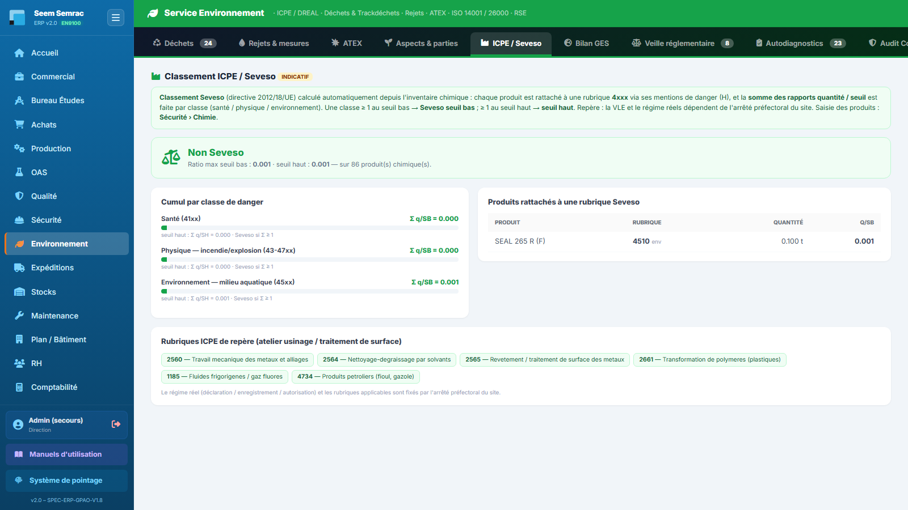
ICPE / Seveso — le bandeau de verdict en haut, puis les trois jauges de cumul : c'est la jauge la plus haute qui décide du classement.
Pas à pas — obtenir et interpréter le classement
Assurez-vous que l'inventaire chimique est à jour dans Sécurité › Chimie : chaque produit doit porter ses mentions de danger (H) et une quantité avec son unité. Un produit sans quantité est ignoré du calcul.
Revenez sur cet onglet : l'ERP rattache automatiquement chaque produit à une rubrique Seveso 4xxx à partir de ses mentions H, convertit la quantité en tonnes, puis divise par le seuil de la rubrique.
Lisez les trois jauges : les ratios se cumulent par classe de danger. Une classe dont la somme atteint 1 au seuil bas fait basculer le site en Seveso seuil bas ; 1 au seuil haut le fait passer en seuil haut.
Regardez la carte des produits pour identifier les contributeurs : ce sont eux qu'il faut réduire, substituer ou déstocker si vous approchez d'un seuil.
Comparez enfin la liste des rubriques ICPE de repère avec votre arrêté préfectoral pour vérifier qu'aucune activité nouvelle n'est passée sous les radars.
Règles & points d'attention
Le résultat est indicatif et sert à alerter, pas à déclarer. Le régime réel (déclaration, enregistrement, autorisation) et les rubriques applicables sont fixés par l'arrêté préfectoral du site.
La conversion des quantités suppose une densité voisine de 1 : les kilogrammes et les litres sont divisés par 1000 pour obtenir des tonnes. Un produit très dense ou très léger fausse légèrement le ratio.
Cet onglet ne remplace pas la mise à jour de l'inventaire chimique : tout ce qui n'est pas saisi dans Sécurité › Chimie n'existe pas dans le calcul.
Attention : un verdict « Non Seveso » affiché avec un inventaire chimique incomplet ne prouve rien. Avant d'utiliser cet écran comme argument, vérifiez le nombre de produits pris en compte affiché dans le bandeau.
6
Bilan GES
À quoi ça sert. Donner une première estimation de l'empreinte carbone de l'entreprise sans campagne de mesure. L'ERP reprend les factures fournisseurs de l'exercice, les ventile par compte comptable et les convertit en tonnes de CO₂ équivalent grâce à des facteurs d'émission monétaires. C'est un onglet de lecture : il se remplit tout seul au rythme de la comptabilité.
Ce que vous voyez
Le titre « Bilan GES / Carbone (BEGES) » avec l'étiquette INDICATIF — MONÉTAIRE, le rappel de méthode, puis quatre tuiles et deux cartes.
Les quatre tuiles : Total CO₂e de l'exercice, Scope 1 — direct (combustion, carburants), Scope 2 — électricité (énergie achetée) et Scope 3 — indirect (achats, transport, déchets), toutes en tonnes.
La carte « Répartition par poste (tCO₂e) » : une barre par famille d'achats, la plus émettrice en tête, colorée selon son scope. Tant qu'aucune facture fournisseur n'existe sur l'exercice, elle affiche le message « le bilan se remplit à mesure de la saisie des achats (Comptabilité) ».
La carte « Facteurs d'émission monétaires » donne les kg CO₂e par euro HT retenus par famille de compte : électricité, combustibles, énergie autre, carburants, achats matières premières, fournitures / consommables, sous-traitance (études et générale), transports sur achats et ventes, déplacements et missions. Chaque ligne indique son scope.
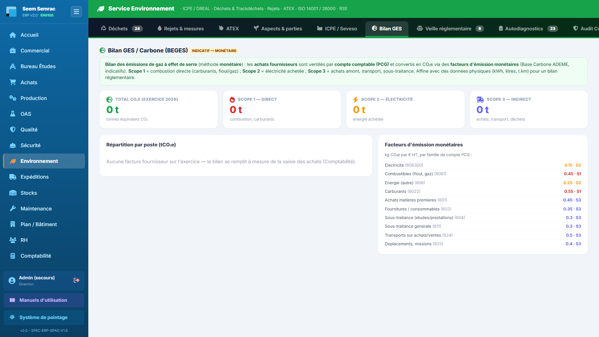
Bilan GES — les quatre tuiles donnent la répartition par scope ; la carte des facteurs, à droite, explique exactement d'où vient chaque tonne affichée.
Pas à pas — fiabiliser le bilan
Ouvrez l'onglet et lisez le total et sa répartition par scope : c'est votre point de départ.
Regardez la répartition par poste : les deux ou trois premières barres concentrent l'essentiel de l'empreinte. Ce sont vos leviers.
Si un poste vous paraît absent ou sous-évalué, la cause est presque toujours comptable : la facture fournisseur n'a pas été saisie, ou son compte de charge n'est pas renseigné. Corrigez-la dans Comptabilité — le bilan se recalcule à l'affichage suivant.
Une facture sans compte de charge reconnu est rattachée par défaut au poste « Autres achats », en scope 3 : une part importante dans ce poste signale un défaut d'imputation comptable.
Pour un bilan opposable, complétez cette estimation par des données physiques (kWh d'électricité, litres de carburant, tonnes.kilomètres de transport) : la méthode monétaire ne suffit pas à un BEGES réglementaire.
Règles & points d'attention
Le bilan porte sur l'exercice en cours uniquement : les factures des autres années ne sont pas comptées.
Les facteurs d'émission sont indicatifs (Base Carbone ADEME). Ils suffisent à hiérarchiser les postes, pas à publier un chiffre officiel.
Une baisse du total peut refléter une baisse d'activité et non un progrès environnemental : rapportez toujours le résultat au chiffre d'affaires ou aux heures produites.
Bon à savoir : comme le bilan se nourrit des achats, il progresse mécaniquement en cours d'année. Comparez des exercices complets entre eux, jamais un exercice en cours avec l'année précédente clôturée.
7
Veille réglementaire
À quoi ça sert. C'est le registre des obligations réglementaires environnementales : ICPE / DREAL (arrêté préfectoral 2565), Code de l'environnement, REACH, ISO 14001, ISO 26000, ATEX. Pour chacune, on dit si elle nous est applicable, où on en est, qui en répond et quand il faut la revérifier.
Ce que vous voyez
Un tableau unique, un champ de recherche et le bouton vert « Nouvelle obligation ». Colonnes : Domaine, Obligation, Référence, Parution, Échéance, Responsable, Statut.
Statuts : à vérifier · conforme · partiel · non conforme · na (non applicable).
La colonne Échéance passe en rouge si la date est dépassée et en orange dans les 30 jours.
La colonne Parution combine le type de texte (loi, décret, arrêté, directive UE, règlement UE, norme, arrêté préfectoral) et sa date.
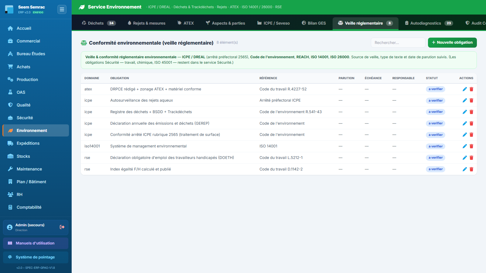
Veille réglementaire — le registre des obligations environnementales, avec statut de conformité, responsable et échéance de revérification.
Pas à pas — inscrire une obligation
Cliquez sur « Nouvelle obligation » et choisissez le domaine : ICPE / Environnement, ISO 14001, RSE, ISO 26000 ou ATEX.
Écrivez l'obligation en clair (champ obligatoire) — ce que l'entreprise doit faire, pas le titre du texte.
Renseignez la référence réglementaire (l'article), le type de texte, la source de veille (organisme ou adresse consultée) et la date de parution.
Cochez « Applicable » si l'obligation nous concerne, puis positionnez le statut de conformité.
Datez le dernier contrôle et l'échéance du prochain, désignez un responsable et collez le lien de la preuve (rapport, attestation, PV). Enregistrez.
Attention : le registre des obligations est partagé avec le service Sécurité. Cet écran n'affiche que les domaines environnementaux ; les obligations santé-sécurité au travail, chimique et ISO 45001 sont dans Sécurité › Veille réglementaire. Choisissez donc le domaine avec soin : une obligation classée dans le mauvais domaine disparaît de la vue de son responsable.
Les alertes de conformité (statut non conforme ou échéance dépassée) sont comptées dans la tuile « Conformité — alertes » du tableau de bord.
8
Autodiagnostics
À quoi ça sert. Mesurer, chapitre par chapitre, où nous en sommes par rapport aux deux référentiels que nous nous appliquons : l'ISO 14001 (management environnemental) et l'ISO 26000 (responsabilité sociétale). L'onglet réunit les deux grilles de maturité et, en dessous, les indicateurs RSE. Ce sont des auto-évaluations : elles préparent l'audit, elles ne le remplacent pas.
Autodiagnostic de maturité ISO 14001
L'évaluation, chapitre par chapitre, de la maturité du système de management environnemental face à l'ISO 14001:2015. Colonnes : Chap., Exigence, Niveau actuel, Cible, Action, Échéance.
Les quatre niveaux sont : 1 — Non conforme / inexistant · 2 — Partiellement maîtrisé · 3 — Conforme mais améliorable · 4 — Conforme aux exigences. La légende est rappelée sous le tableau.
Dès qu'au moins une ligne existe, la barre affiche le taux de maturité (« Maturité X/4 ») en vert au-delà de 75 %, orange entre 50 et 75 %, rouge en dessous ; trois tuiles apparaissent : Maturité moyenne, Cible moyenne et Chapitres à traiter (ceux dont le niveau actuel est inférieur ou égal à 2).
Les sept chapitres couverts sont : 4 Contexte de l'organisme · 5 Leadership · 6 Planification · 7 Support · 8 Réalisation des activités · 9 Évaluation des performances · 10 Amélioration.
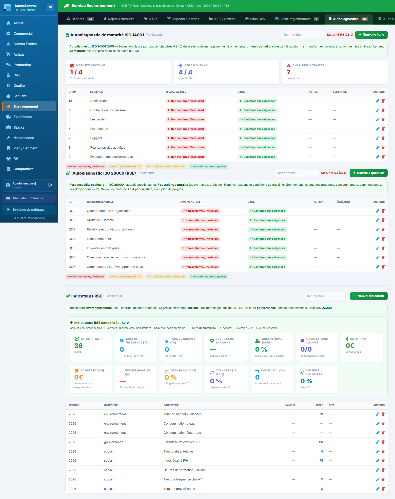
Autodiagnostics — la grille de maturité ISO 14001 en haut, l'autodiagnostic ISO 26000 et les indicateurs RSE en dessous.
À la toute première utilisation, cliquez sur « Initialiser la grille (7 chapitres) » puis confirmez : les sept lignes se créent d'un coup. Si la grille existe déjà, l'ERP vous le dit et ne fait rien.
Ouvrez une ligne au crayon : choisissez le niveau actuel et le niveau cible, écrivez le constat qui justifie la note.
Décrivez l'action de mise à niveau, désignez un responsable et fixez une échéance. Enregistrez.
Suivez la progression avec la tuile Maturité moyenne : c'est l'indicateur que vous présenterez en revue de direction.
Astuce : cotez d'abord les sept chapitres en une seule séance, même grossièrement. Le taux de maturité initial est plus utile que sept lignes parfaites obtenues six mois plus tard.
ISO 26000 & indicateurs RSE
Sous la grille ISO 14001, le même onglet porte l'autodiagnostic ISO 26000 puis les indicateurs RSE, séparés par un trait.
Autodiagnostic ISO 26000 — les 7 questions centrales de la responsabilité sociétale : QC1 Gouvernance de l'organisation · QC2 Droits de l'Homme · QC3 Relations et conditions de travail · QC4 L'environnement · QC5 Loyauté des pratiques · QC6 Questions relatives aux consommateurs · QC7 Communautés et développement local. Elles se cotent sur la même échelle de maturité 1 à 4, avec constat, action de progrès, responsable et échéance ; le taux de maturité s'affiche dans la barre. Un bouton « Initialiser (7 questions centrales) » crée la grille en une fois.
Indicateurs RSE consolidés (AUTO) — un bloc vert de tuiles calculées en direct, sans aucune ressaisie, depuis RH, Sécurité, Comptabilité et Environnement : effectif actif, taux de fréquence (TF), taux de gravité (TG), jours sans accident, absentéisme du mois, habilitations valides, CA HT et achats HT de l'année, part de femmes (égalité F/H), taux d'OETH (obligation légale de 6 %), turnover sur 12 mois, consommation d'eau annuelle et part de déchets valorisés (filière R).
Indicateurs RSE saisis — le tableau du bas, pour tout ce que l'ERP ne sait pas calculer. Colonnes : Période, Catégorie, Indicateur, Valeur, Cible, Site. Bouton « Nouvel indicateur ».
Cliquez sur « Nouvel indicateur ».
Saisissez la période (par exemple l'année), choisissez la catégorie — Social, Environnement ou Gouvernance — et un code si vous en utilisez un.
Écrivez le libellé de l'indicateur (champ obligatoire), sa valeur, son unité et la cible visée.
Choisissez le site et enregistrez : l'indicateur rejoint le tableau et remonte dans le dashboard environnemental, regroupé par catégorie.
Ne dupliquez pas : tout ce qui figure déjà dans le bloc vert AUTO n'a pas à être ressaisi dans le tableau du bas. Réservez la saisie manuelle aux indicateurs que l'ERP ne connaît pas — part d'achats responsables, actions de mécénat, part d'énergie renouvelable, etc.
Les deux boutons d'initialisation (ISO 14001 et ISO 26000) sont sans danger : relancés sur une grille déjà créée, ils ne dupliquent rien et vous préviennent.
9
Audit Conformité
À quoi ça sert. C'est le cycle d'audit interne appliqué à l'environnement : on ordonnance les audits ISO 14001 de l'année, on les réalise, on consigne les écarts et on solde les plans d'action. Cet onglet est identique à celui de la Qualité et de la Sécurité — mêmes quatre sous-onglets, même planning, seul le filtre normatif change (ici l'ISO 14001).
Ce que vous voyez
Une barre de quatre sous-onglets, chacun avec son compteur (sauf Référentiels, qui n'est pas une liste) : Programme · Constats & plans d'action · Grilles · Référentiels. Le bouton actif est bleu, les autres gris ; le contenu change sous la barre sans recharger la page, et Programme s'affiche à l'ouverture.
Programme — le planning d'audit interne, commun avec le service Qualité mais filtré sur l'ISO 14001 : n'apparaissent ici que les lignes rattachées à ce référentiel ou au thème J (maîtrise environnementale, déchets, rejets, ATEX). Écran détaillé au paragraphe suivant.
Constats & plans d'action — les écarts relevés pendant les audits (NC ou Axe) avec leur preuve et l'action décidée ; le bouton « Convertir en NC » les bascule dans le cycle 8D du service Qualité.
Grilles — les questionnaires d'audit qui posent au moins une question d'environnement (thème J). Chaque grille retenue est affichée entière, avec un repère N question(s) ISO 14001. Pour chaque question : libellé, preuve attendue, clause, thème et mode (AUTO pré-rempli par les sondes de l'ERP, ASSISTÉ, MANUEL). Aucune grille n'y figure tant qu'aucune question de thème J n'a été créée — voir l'encadré ci-dessous.
Référentiels — la documentation normative de ce service uniquement : le thème d'audit processus J (environnement) et la grille de conformité clause par clause de l'ISO 14001. Les autres normes du SMI (ISO 9001, EN 9100, ISO 45001, ISO 27001) sont dans Qualité › Audit Conformité › Référentiels, qui reste le hub du système.
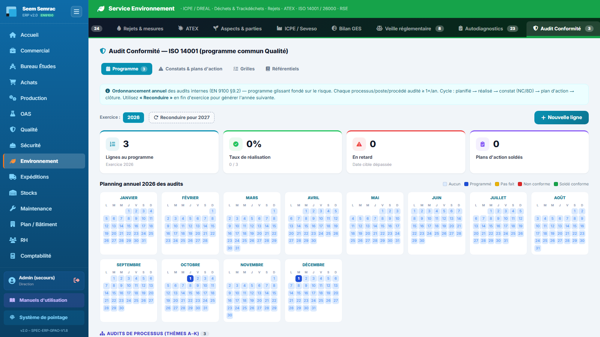
Audit Conformité — les quatre sous-onglets standard, ouverts sur le programme d'audit filtré ISO 14001. Exactement la même barre qu'en Qualité et en Sécurité.
Le programme d'audit, écran par écran
Le sous-onglet Programme est identique à celui du service Qualité : c'est le même ordonnancement annuel des audits internes (EN 9100 §9.2), simplement filtré sur le référentiel du service. N'apparaissent ici que les lignes rattachées au référentiel ISO 14001 ou au thème J ; les compteurs affichés ne couvrent donc que ce périmètre.
Choisissez l'exercice. Les pastilles d'années, en haut à gauche, basculent le programme d'une année sur l'autre ; l'exercice le plus récent est sélectionné à l'ouverture.
Lisez les quatre indicateurs de l'exercice affiché : Lignes au programme, Taux de réalisation, En retard (date cible passée sans audit réalisé) et Plans d'action soldés.
Servez-vous du planning annuel — les douze mois de l'exercice, une case par jour, colorée selon l'état : bleu = audit programmé, jaune = pas fait (échéance dépassée), rouge = non conforme (NC ouverte), vert = soldé conforme ; une case pâle signifie qu'aucun audit n'est prévu ce jour-là. Cliquez une case occupée pour consulter l'audit ou le déprogrammer ; cliquez une case vide pour y affecter un audit non encore programmé (ou en déplacer un).
Ajoutez une ligne avec « + Nouvelle ligne » : le formulaire demande le type (processus, poste, flash, procédé spécial, exigence client), la famille de processus, l'entité auditée (obligatoire), les thèmes, les référentiels couverts (cases à cocher), la date cible, le temps estimé, l'auditeur, l'audité principal et la grille associée. Sous le planning, les lignes se rangent dans les tableaux « Audits de processus » et « Audits de poste & flash ». Le cycle d'une ligne reste : planifié → réalisé → constat (NC / 8D) → plan d'action → clôture.
Reconduisez le programme en fin d'exercice avec « Reconduire pour année+1 » : tout le programme est recopié sur l'année suivante, les dates décalées d'un an et les statuts remis à « planifié ».
Bon à savoir : le planning est commun avec la Qualité — un seul calendrier pour tout le SMI. Une ligne créée ici apparaît aussi dans Qualité › Audit Conformité, et l'inverse est vrai à condition que la ligne porte le référentiel ISO 14001 ou le thème J : sans quoi elle ne remontera pas dans cet écran. Cochez donc toujours le référentiel.
Règles & points d'attention
L'ordre de lecture du système reste le même, mais il traverse désormais plusieurs onglets : Aspects & parties (contexte) → Veille réglementaire (obligations) → Autodiagnostics (maturité) → Audit Conformité (vérification et plans d'action). Chacun alimente le suivant.
Les obligations, les parties intéressées et les autodiagnostics ne sont plus dans cet onglet : ils ont chacun leur place au premier niveau. L'audit vérifie, il ne recense pas.
Cet onglet a exactement la même structure en Qualité, en Sécurité et en Environnement : ce que vous apprenez ici vaut dans les trois services. Seul le contenu change — chaque service ne voit que les critères et les grilles de sa norme.
À faire : aucune grille d'audit ne porte encore de question de thème J (environnement), donc le sous-onglet Grilles est vide ici. Créez-en une avec « Nouvelle grille » — elle apparaîtra dès sa première question de thème J.
10
Tableau de bord
À quoi ça sert. Voir en un écran l'état environnemental du site et savoir où intervenir aujourd'hui. C'est la page à ouvrir le matin, et celle à projeter en revue de direction ou en réunion QSE. Tout y est calculé à partir des autres onglets : rien ne s'y saisit.
Ce que vous voyez
Un large bandeau vert « Tableau de bord environnemental complet » avec un bouton « Ouvrir → », puis huit tuiles de synthèse et deux colonnes de cartes.
Les huit tuiles : Déchets tracés (avec le nombre de dangereux) · Déchets du mois (quantité cumulée) · Conso. eau (mois) · Rejets hors VLE · Chimie — risque env. élevé (avec le nombre de risques moyens) · Aspects significatifs (AES) · Conformité — alertes · ATEX — revues dues. Les tuiles d'alerte passent au rouge ou à l'orange dès qu'elles ne sont pas à zéro.
La carte « Risque chimique pour l'environnement » (SEIRICH, indicatif) liste jusqu'à dix produits classés sur l'axe environnemental — danger pour le milieu aquatique croisé avec la quantité stockée — avec leur niveau. La saisie des produits se fait dans Sécurité › Chimie.
La colonne de droite propose trois raccourcis : « Audit environnemental (thème J) » vers le service Qualité, « Cartographie (Plan / Bâtiment) » pour localiser zones ATEX, stockages de déchets dangereux et points de rejet sur le plan de l'usine, et un rappel « Traitement de surface ».
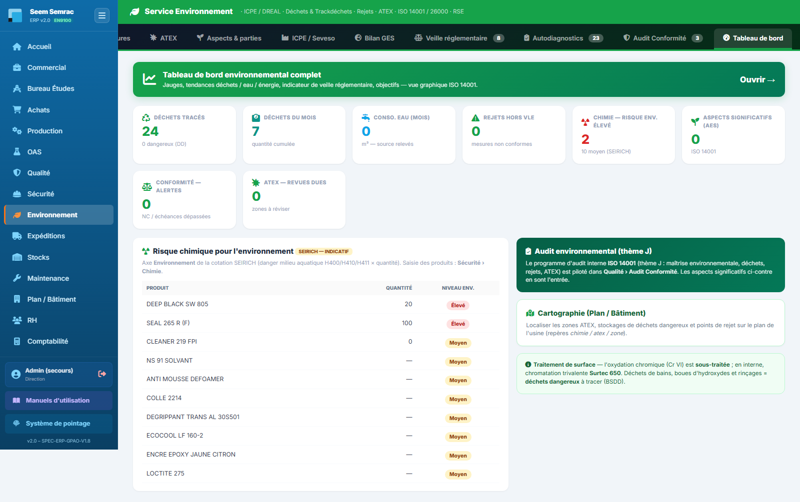
Tableau de bord — les huit tuiles du haut sont la revue quotidienne ; toute tuile colorée renvoie à un onglet où il y a quelque chose à faire.
Pas à pas — la revue quotidienne
Balayez les huit tuiles. Toute tuile non verte désigne un onglet à ouvrir.
Rejets hors VLE au rouge → onglet Rejets & mesures : identifiez la mesure non conforme, ouvrez une NC dans Qualité et une action dans Aspects & impacts.
ATEX — revues dues au rouge → onglet ATEX : les zones dont la date de revue est passée sont en rouge dans la colonne Revue. Réévaluez-les et régénérez leur DRPCE.
Conformité — alertes au rouge → onglet Veille réglementaire : traitez les obligations non conformes et celles dont l'échéance est dépassée.
Chimie — risque env. élevé au rouge → lisez la carte SEIRICH juste en dessous, puis allez réduire, substituer ou mieux confiner les produits concernés depuis Sécurité › Chimie.
Pour la vue graphique complète — jauges, tendances déchets / eau / énergie, indicateur de veille réglementaire et objectifs — cliquez sur « Ouvrir → » dans le bandeau vert : le dashboard environnemental s'ouvre, avec ses filtres et son export.
Règles & points d'attention
Les tuiles « Déchets du mois » et « Conso. eau (mois) » portent sur le mois calendaire en cours : elles repartent de zéro le 1er de chaque mois, ce n'est pas une anomalie.
Un tableau de bord tout vert avec des onglets vides ne veut rien dire : ces indicateurs ne valent que par la régularité de la saisie dans les six premiers onglets.
L'oxydation chromique (chrome VI) est sous-traitée ; en interne, la chromatation trivalente Surtec 650. Les déchets de bains, boues d'hydroxydes et eaux de rinçage sont des déchets dangereux à tracer par bordereau — c'est le rappel affiché en bas à droite de l'écran.
Astuce : avant une visite DREAL ou un audit de certification, visez trois zéros — Rejets hors VLE, Conformité alertes et ATEX revues dues. Ce sont les trois premiers chiffres qu'un inspecteur saura interpréter sans explication.